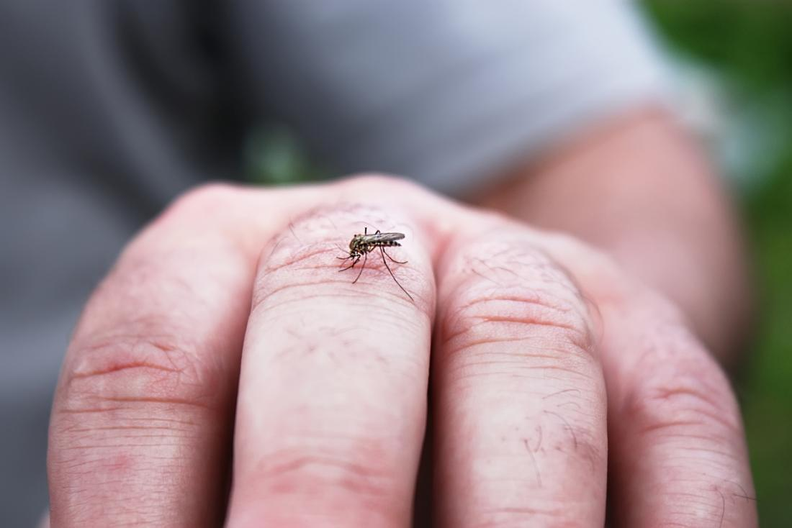
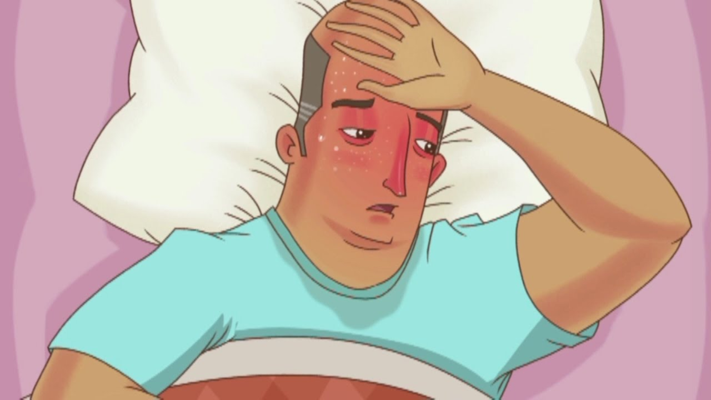

Apesar de existir quatro variações de dengue os sintomas são os mesmos. Apartir da segunda vez que for infectado o risco de contra a dengue hemorrágica ou o síndrome do choque da dengue fica maior, então esteja atento.
Sintomas Dengue Clássica:
Vômito
Cansaço
Dor de cabeça
Febre com temperaturas de 39° a 40° graus
Costas e articulações doloridas
Enjôos
Dengue Hemorrágica:
Sintomas iniciais parecidos com a dengue clássica
Após o terceiro ou quarto dia começa as hemorragias ocasionadas pelo sangramento de pequenos vasos da pele e outros orgãos
Queda da pressão arterial
Tonturas e quedas
Se essa doença não for tratada logo pode levar a morte
Sintomas da Síndrome da Dengue:
Caso mais sério de dengue
Queda ou ausência de pressão arterial
Inquietação
Palidez
Perda de conciência
A pessoa pode ter complicações neurológicas e cardiorrespirátórias
Insuficiência hepática
Hemorragia digestiva
Derrame pleural
Pode levar a óbito se não tratada
